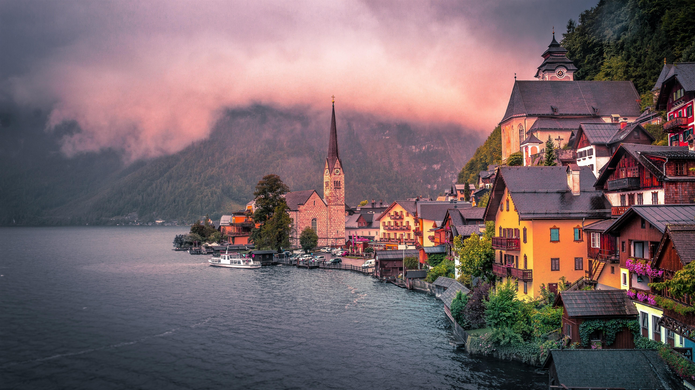

Austria, a landlocked country in Central Europe, is renowned for its stunning Alpine landscapes and rich cultural heritage, including classical music legacies from composers like Mozart and Beethoven. The capital city, Vienna, is famed for its historic architecture, vibrant arts scene, and high quality of life. With a strong economy and a population of around 9 million, Austria is a key member of the European Union.
|  |
Top Attractions in Austria
- Schönbrunn Palace
- Hallstatt
- The Hofburg
- St. Stephen's Cathedral
- Salzburg Altstadt (Old Town)